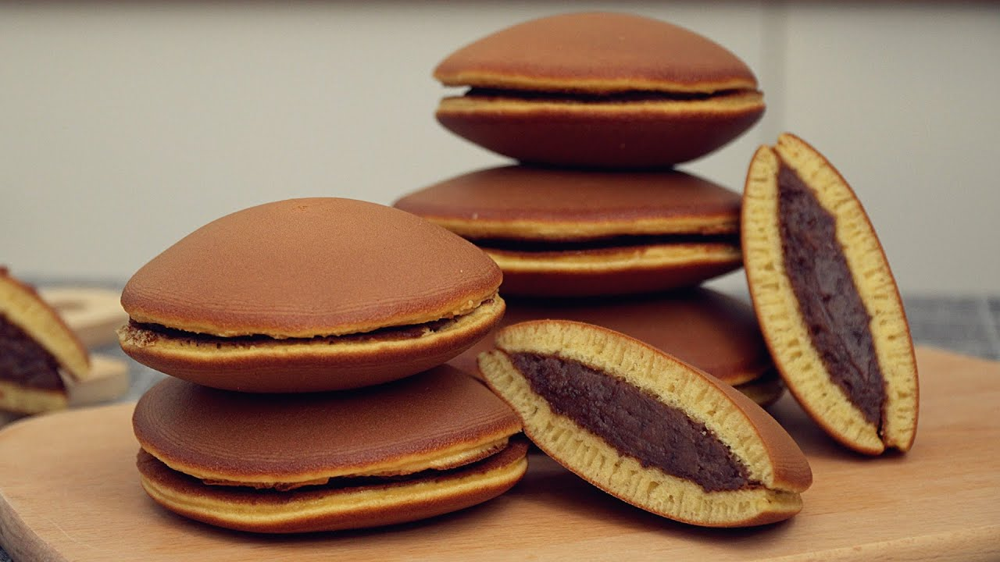

By far one of the most popular wagashi (traditional Japanese confections) types, dorayaki is a delicious snack consisting of a sweet filling sandwiched between two fluffy pancakes. Its name stems from dora, the Japanese word for a gong, which the dorayaki shape is reminiscent of, and although its origins are in fact said to be ancient, the popular treat took its current form in the early 1900s when it was reportedly first made as a sandwich by a Tokyo-based confectionery called Usagiya.
Meal prep time : 45 minutes
Servings : 6